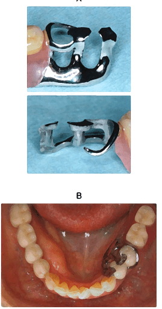
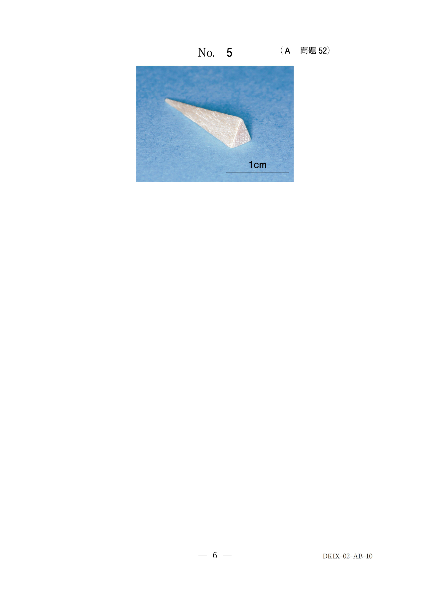
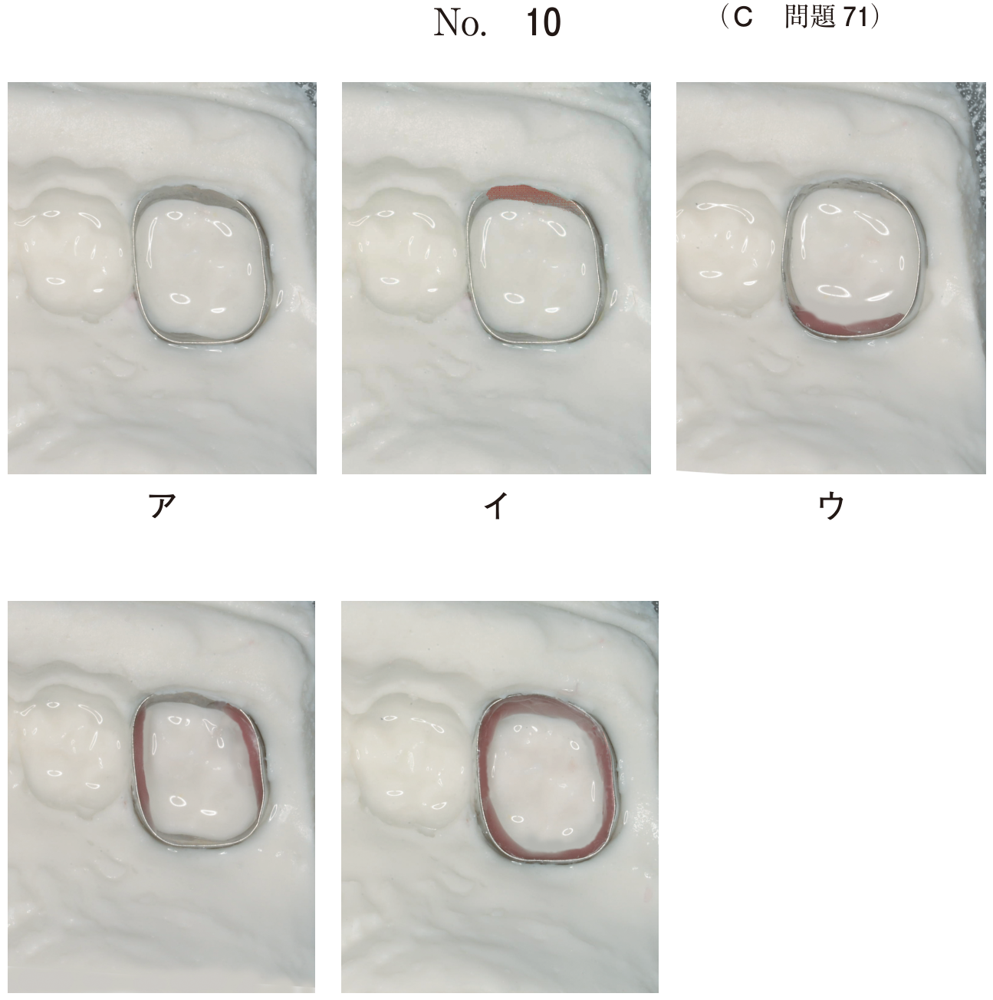
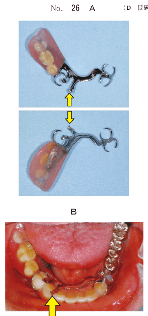
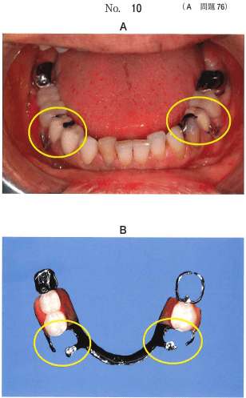
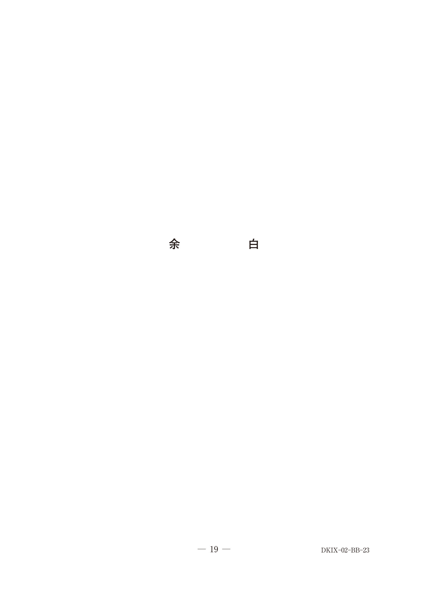
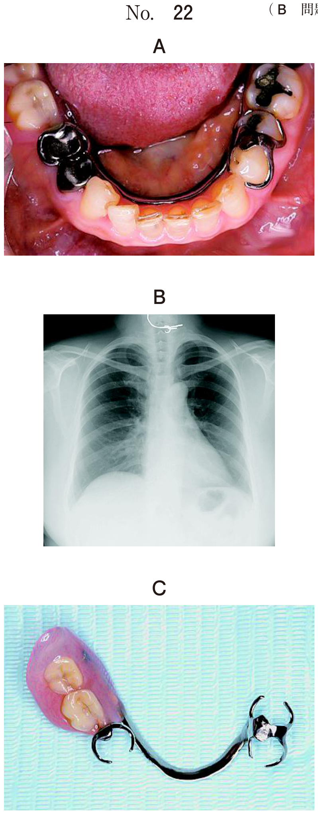

支台装置は支台歯に連結して支持・把持・維持の機能を担う。
支持を担う構成要素。咬合圧を支台歯に伝達する。
| 種類 | 設置部位 |
|---|---|
| 咬合面レスト | 大臼歯・小臼歯の咬合面 |
| 舌面レスト（基底結節レスト） | 犬歯・切歯の舌面 |
| 切縁レスト（エンブレジャーフック） | 切歯の切縁・歯間部 |
ニアゾーン：欠損部に近い側（クラスプ基部に近い）
ファーゾーン：欠損部から遠い側
維持鉤腕の鉤尖はファーゾーンのアンダーカットに設置。
| クラスプ | 特徴 |
|---|---|
| エーカースクラスプ | レスト付き2腕鉤、最も基本的 |
| リングクラスプ | 鉤尖・鉤体をニアゾーンに置き歯冠を取り巻く |
| バックアクションクラスプ | 近心レストから遠心舌側へ走行、近心頬側のアンダーカットに鉤尖 |
| RPI支台装置 | 近心レスト、隣接面板、Iバー。支台歯への負担軽減 |
| コンビネーションクラスプ | 頬側鉤腕をワイヤー、舌側をキャストで製作 |
直接支台装置：欠損部に隣接する支台歯に設置。維持力をもつ。
間接支台装置：欠損部から離れた支台歯に設置。遊離端義歯の浮き上がり防止。レスト、フック、スパーなど。
支台歯の誘導面に対応する金属部分。把持作用を発揮。
クラスプに求められる要件のうち受動性に該当するのはどれか。1つ選べ。
【解説】受動性は「静止時に支台歯に力を及ぼさない」こと。a=支持、b=維持、c=囲繞性、d=拮抗作用。
鉤尖と鉤体とをニアゾーンに置き、鉤腕が歯冠を取り巻く形態のクラスプはどれか。1つ選べ。
【解説】リングクラスプは鉤尖・鉤体をニアゾーンに置き、歯冠を取り巻く形態。
可撤性部分床義歯の写真（別冊No.64A）と装着時の口腔内写真（別冊No.64B）を別に示す。
下顎左側第二小臼歯の支台装置において舌側鉤腕が関与する機能はどれか。2つ選べ。

【解説】舌側鉤腕（把持鉤腕）は囲繞性（歯を取り囲む）と拮抗作用（側方圧の相殺）に関与。維持力は持たない。
部分床義歯の支台装置の写真（別冊No.10）を別に示す。
エーカースクラスプと比較した本支台装置の特徴はどれか。2つ選べ。

【解説】写真はワイヤークラスプ。鋳造クラスプと比較して目立ちにくい（細い）、維持力の再調整が容易（屈曲可能）。
義歯装着時の口腔内写真（別冊No.14）を別に示す。
アのクラスプがイより優れるのはどれか。2つ選べ。

【解説】アはバー型クラスプ（Iバー）。環状型（イ）と比較して目立ちにくい（審美性）、プラーク付着が起こりにくい（歯面を覆わない）。
可撤性部分床義歯の写真（別冊No.26A）と口腔内装着時の写真（別冊No.26B）とを別に示す。
矢印で示す部分の目的はどれか。2つ選べ。

【解説】矢印はレスト（間接支台装置）。把持作用と浮き上がりの防止に寄与。
65歳の女性。支台歯の補綴処置を行い、新義歯を装着した。口腔内写真（別冊No.10A）と装着した義歯の写真（別冊No.10B）を別に示す。
本症例において丸印で示す支台装置を選択した理由はどれか。1つ選べ。

【解説】丸印はワイヤークラスプ（前歯部）。前歯部では審美性の向上が選択理由。
62歳の男性。上顎左側臼歯部欠損による咀嚼困難を主訴として来院した。診察の結果、上顎部分床義歯を新製することとした。新義歯装着時の口腔内写真（別冊No.23A）と支台装置の写真（別冊No.23B）を別に示す。
矢印で示す部位が有するのはどれか。3つ選べ。

【解説】矢印は把持鉤腕（舌側鉤腕）。囲繞性、把持力、拮抗作用を有する。維持力・支持力は持たない。
上顎右側側切歯遠心部に付与された部分床義歯の支台装置の写真（別冊No.30）を別に示す。
ワイヤークラスプと比較したこの支台装置の長所はどれか。2つ選べ。

【解説】写真は歯冠内アタッチメント。ワイヤークラスプと比較して審美性に優れる（金属線が見えない）、可動方向を規制（ガイドプレーン機能）。